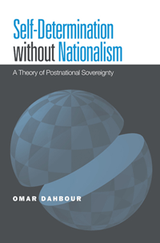

<body bgcolor="#FFFFFF" text="#000000" link="#0000FF" vlink="#CC0000" alink="#CC0000"><center><hr width="350" size="1" align="center" noshade>Advocating the new concept of "ecosovereignty," based on a reformulation of political self-determination<hr width="350" size="1" align="center" noshade><p><a href="https://cdcshoppingcart.uchicago.edu/Cart/ChicagoBook.aspx?ISBN=9781439900741&&PRESS=temple" target="_top">Buy this book!</a> | <a href="https://cdcshoppingcart.uchicago.edu/Cart/Cart.aspx?PRESS=temple" target="_top">View Cart</a> | <a href="https://cdcshoppingcart.uchicago.edu/Cart/Cart.aspx?PRESS=temple" target="_top">Check Out</a></p><p></p></center><!--none//--><h1>Self-Determination without Nationalism</h1>
<H2>A Theory of Postnational Sovereignty</H2>
<h3>Omar Dahbour</h3>
<P>cloth 1-4399-0074-4 $84.50, Dec 12, <FONT COLOR=#990033>Available</FONT>
<br>paper 1-4399-0075-2 $31.95, Aug 14, <FONT COLOR=#990033>Available</FONT>
<br>Electronic Book 1-4399-0076-0 $31.95 <FONT COLOR=#990033>Available</FONT>
<BR> 272 pp
6x9
7&nbsp;map(s) 7&nbsp;figures
</P><BLOCKQUOTE><I>"Dahbour�s </I>Self-Determination without Nationalism<I> provides an interesting defense of a non-nationalist interpretation of the principle of self-determination together with a detailed theory of sovereignty that is centered upon his novel concept of �ecosovereignty�. Dahbour�s treatment of these concepts and their interconnection yields a systematic approach to global justice that contrasts with prevailing realist and cosmopolitan theories. He also gives insightful discussions of nationalism, patriotism, cosmopolitan ideals of a global community, and particular political challenges that were faced in the twentieth century."</I>
<br>&#151<b>Tomis Kapitan</b>, Department of Philosophy, Northern Illinois University<I></I></BLOCKQUOTE>
<P>How do groups&#8212;be they religious or ethnic&#8212;achieve sovereignty in a postnationalist world? In <i>Self-Determination without Nationalism</i>, noted philosopher Omar Dahbour insists that the existing ethics of international relations, dominated by the rival notions of liberal nationalism and political cosmopolitanism, no longer suffice.
<P>Dahbour notes that political communities are an ethically desirable and historically inevitable feature of collective life. The ethical principles that govern them, however&#8212;especially self-determination and sovereignty&#8212;require reformulation in light of globalization and the economic and environmental challenges of the twenty-first century.
<P>Arguing that nation-states violate the principle of self-determination, Dahbour then develops a detailed new theory of self-determination that he calls "ecosovereignty." Ecosovereignty defines political community in a way that can protect and further the rights of indigenous peoples as well as the needs of ecological regions for a sustainable form of development and security from environmental destruction.
<BR>&nbsp;<h2>Excerpt</h2><P>Excerpt available at <a href="http://www.temple.edu/tempress">www.temple.edu/tempress</a></p>
<BR>&nbsp;<h2>Reviews</h2>
<p><I>"</I>Self-Determination without Nationalism<I> is a serious and novel contribution to the ongoing dialogue about �globalization� among philosophers and political theorists. Dahbour occupies a unique niche, a rather distinctive position, within that dialogue. There is much of great interest for readers in this book. The idea of �ecosovereignty� is intriguing. And there is, above all, the author's Herculean effort to restore the notion of sovereignty itself, properly understood of course, to some of its former glory"</I><br>&#151<b>William L. McBride</b>, Arthur G. Hansen Distinguished Professor of Philosophy, Purdue University
<p><I>"In </I>Self-Determination without Nationalism<I>, Omar Dahbour powerfully combines trenchant criticisms of nationalism with the innovative construction of an alternative ideal of collective self-determination as a common project of ethical community. Richly informed and resourcefully argued, his book illuminates central questions in the ethics of international relations and political philosophy as a whole."</I><br>&#151<b>Richard Miller</b>, Wyn and William Y. Hutchinson Professor in Ethics and Public Life and Director, Program on Ethics and Public Life, Department of Philosophy, Cornell University
<p><i>"A great deal of Dahbour�s book is spent dismantling the remains of what he argues are wrong-headed concepts like the nation-state, global cosmopolitanism, or ultimate sovereignty.... Dahbour�s work has three important virtues. First, it restores the concept of political community to the centerpiece of politics. Second, it raises questions about the appropriate size for effective and just political communities, and third, it focuses attention on the material conditions that underpin collective life.... [T]he book�s real strength lies in its re-visioning exercise."</i> <br>&#151;<b><i>Social Theory and Practice</i></b>
<BR>&nbsp;<h2>Contents</h2><P>
<p>Preface
<br>Introduction
<br>1. Distinguishing Peoples from Nations
<br>2. Self-Determination and Minority Rights
<br>3. Self-Determination and Plebiscitary Democracy
<br>4. Ethical Communities without Nations
<br>5. The Illusion of Global Community
<br>6. The Contemporary Revival of Sovereignty
<br>7. The Legitimacy of Sovereignty Claims
<br>Conclusion
<br>Notes
<br>Index
</P><BR>&nbsp;<H2>About the Author(s)</H2>
<P><b>Omar Dahbour</b> is Professor of Philosophy at Hunter College and Graduate School, City University of New York, and is affiliated with CUNY's Center for Place, Culture, and Politics. He is the author of <i>Illusion of the Peoples: A Critique of National Self-Determination</i> and coeditor of both <i>The Nationalism Reader</i> and <i>Democracy, States, and the Struggle for Global Justice</i>.</P>
<BR><H2>Subject Categories</H2>
<p><A HREF="/tempress/political.html" TARGET="_top">Political Science and Public Policy</a>
<BR><A HREF="/tempress/philosophy.html" TARGET="_top">Philosophy and Ethics</a>
<BR>
</p>
<BR><h2 class="inpageheading">In the series</H2>
<P><I><a href="http://www.temple.edu/tempress/gep.html" onMouseOver="window.status='Click for other books in this series!'; return true;" onMouseOut="window.status=''; return true;" target="_top">Global Ethics and Politics</a></i>, edited by Carol C. Gould.
</p><p>Global ethics and international political theory are relatively new fields prompted by the growing interconnections of economies, technologies, societies, cultures, and legal systems that together comprise globalization. The <i>Global Ethics and Politics Series</i>, edited by Carol C. Gould, will feature original authored works and distinctive collections dealing with the contemporary ethical issues that are raised by globalization and by the new democratic forms of global governance that can contribute to the realization of justice and human rights. It will also consider new cross-cultural approaches to ethics and political norms and the conditions for intercultural understanding and conflict resolution in a globalizing world. Within these parameters, the series will include books on such themes as ethical issues regarding globalization; cross-cultural approaches to ethics and human rights; new perspectives on transnational democracy and the use of global governance institutions and international law to address questions of global justice and questions of war and peace.</p>
<p align="center"><a href="https://cdcshoppingcart.uchicago.edu/Cart/ChicagoBook.aspx?ISBN=9781439900741&&PRESS=temple" target="_top">Buy this book!</a> | <a href="https://cdcshoppingcart.uchicago.edu/Cart/Cart.aspx?PRESS=temple" target="_top">View Cart</a> | <a href="https://cdcshoppingcart.uchicago.edu/Cart/Cart.aspx?PRESS=temple" target="_top">Check Out</a></p><p><font face="Arial" size="1"><a href="copyright.html" onMouseOver="window.status='Web Copyright Policy';return true;" onMouseOut="window.status=''" title="Web Copyright Policy">&copy;</a> 2015 <a href="http://www.temple.edu" target="new" onMouseOver="window.status='Link to Temple University home page';return true;" onMouseOut="window.status=''" title="Link to Temple University home page">Temple University</a>. All Rights Reserved. http://www.temple.edu/tempress/titles/2049_reg.html</font></p>